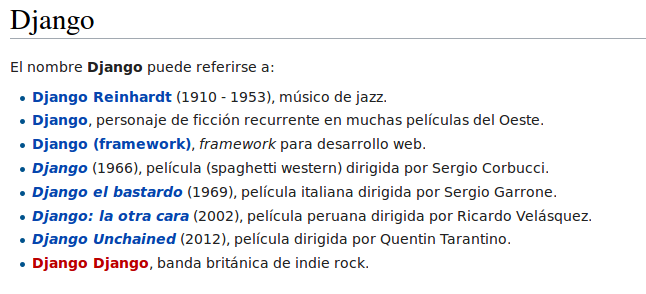

The web framework for perfectionists with deadlines
Iniciemos..
django-admin.py startproject hellodjango
¿Qué no es Django?
¿Qué es Django?
Django es un framework de desarrollo web de código abierto, escrito en Python. Fue diseñado para resolver las tareas y los problemas más comunes del desarrollo de aplicaciones web.
Desde 2008 está a cargo de la Django Software Foundation
Características principales:
- Tremendamente rápido (DRY) centrate en escribir tu aplicación.
- Multitud de componentes reutilizables(plug and play apps).
- No se olvida de la seguridad
- Permite la escalabilidad
- Versatilidad